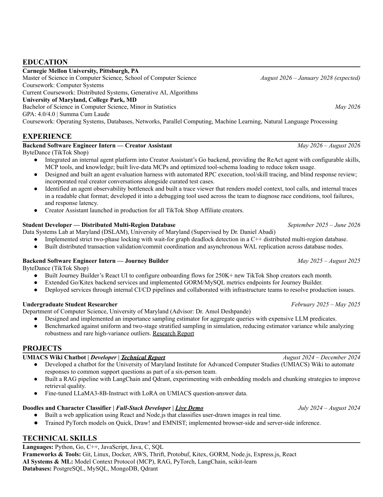
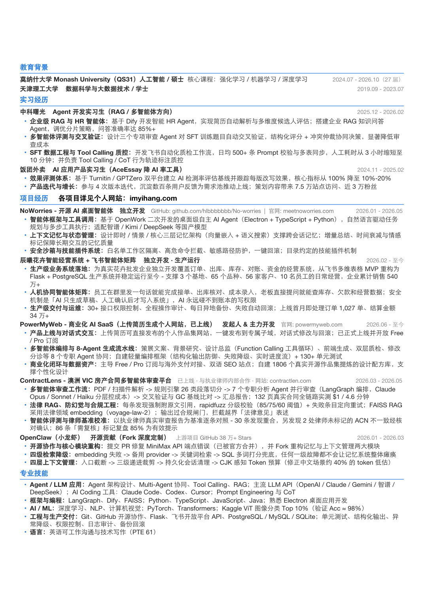

公开PDF · 脱敏专业模块Andrew Wang：字节后端 / Agent 实习履历
可借鉴写法：清晰呈现 Go 服务端基础与 Creator Assistant Agent 实习职责（MCP 工具接入、真实对话评测与 Trace 埋点），适合学习如何量化表达大厂内部工程贡献。
样本背景与边界：2025–2026 实习履历（美本背景）；未披露国内校招 SSP 档位或内部闭源仓库。
本报告围绕大厂后端与 Agent 工程实习求职整理：先拆解 24 份可比工程 JD 的真实门槛，再用 34 位候选人履历、99 份面经和 25 个项目源码核对“应该学到多深、怎么表达贡献”。
语言并发、MySQL、Redis 和 MQ 不能只列名词。面试高分的关键是能结合具体业务解释：为什么这样选型、并发或宕机时哪里会不一致、压测瓶颈在哪里。
只会调大模型 API 或套框架模板已不具区分度。面试重点追问：多步状态怎么持久化、工具失败怎么兜底回退、准确率与耗时怎么用数据集量化验证。
样本基数：239 条已核公开记录（33 条 JD、34 份候选人案例、99 份面经、18 份专业观点、25 个代码项目）。所有项目均基于固定源码静态审阅。
33 条 JD 线索中，24 份工程岗位全文可比：后端 10 份、Agent 工程 11 份、混合 3 份（另 9 份算法研究或摘要受限材料单列排除）。阅读 JD 时务必区分明确要求、优先加分与入职后工作职责。
以一门主力服务端语言 + 计算机基础 + 数据库/缓存为共同底座。Redis、MQ 与分布式高可用按岗位梯度出现，重在考察完整链路一致性与排障深度。
在服务端编程基础上，明确要求 LLM/Agent 认知、RAG 检索与工具调用；而多 Agent 记忆状态机、自动化评测与沙箱隔离更多出现在优先项或工作职责中。
| 技术主题 | 后端 / 10 | Agent / 11 | 混合 / 3 | 分层结构与备考解读 |
|---|---|---|---|---|
| 编程语言 | 10 (优3) | 11 (优1) | 3 | 两方向均必考；多为 Go/Java/Python/C++ 择一，重点考并发模型与内存机制而非多语言罗列 |
| 算法 / OS / 网络 | 8 | 8 | 3 | 数据结构算法、OS 与网络是共同硬门槛；Agent 岗同样会在一面考察现场手撕代码与网络协议 |
| 数据库 / 存储 | 7 (职1) | 2 (优1·职3) | 2 | 后端 7/10 明确要求（另 2 份单列了解 MySQL）；常追问索引失效、事务隔离与深分页优化 |
| 缓存 (含 Redis) | 5 | 1 | 2 | 后端 6/10 明确要求（精确点名 Redis 占 4 份）；必考缓存穿透/击穿、双写一致性与锁边界 |
| 消息队列 | 3 | 0 (职1) | 1 (优1) | 后端 4/10 明确要求、混合 1/3 优先；重点准备异步解耦、重复消费幂等、延迟队列与死信补偿 |
| 分布式 / 高可用 | 2 (优3·职3) | 3 (含择一1·优1·职2) | 0 (优2) | 除明确要求外，后端 3 份优先 + 4 份职责提及；实习生重在理解限流、降级与多实例竞争窗口 |
| Agent / 框架 | 0 (职1) | 8 (含择一1·优4·职5) | 0 (优1·职2) | Agent 岗 10/11 明确要求（后端/混合多列为职责或优先）；需讲清状态机编排原理而非仅调 API |
| RAG / 检索 | 0 | 6 (含择一1·优2·职3) | 0 (优1·职1) | Agent 岗 6/11 明确要求（含择一）、3/11 列为职责；常考分块策略、混合召回重排与幻觉溯源 |
| 工具调用 / MCP | 0 | 6 (含择一1·优1·职4) | 0 (优1·职1) | Agent 岗 6/11 明确要求、5/11 列为职责；重点考察 Function Call/MCP 协议约束、鉴权与失败回退 |
| 评测 / 效果指标 | 0 | 1 (优2·职5) | 0 | 明确要求仅 1 份，但 Agent 优先(2)与职责(5)高频出现；有无留出集与回归评测是核心加分项 |
读表说明：大号数字为明确要求提及数（括号内“含择一”代表多项技术任选其一，“优”代表优先/加分，“职”代表工作职责）。例如 JD08 将记忆、鉴权和观测列在职责；JD11 将 MQ、Agent/RAG/MCP 列为优先项。混合组 3 条均来自百度，不外推为全行业通用赛道。
投递后端：优先打磨一条涵盖 MySQL 索引与事务、Redis 缓存一致性、MQ 异步解耦与幂等补偿的闭环项目，再按 Java / Go / C++ 岗位补充运行时与网络排障细节。
投递 Agent 工程：保持服务端工程与数据结构功底，将核心精力投入任务编排、检索召回质量、工具调用约束、异常恢复与评测基准，不必把算法研究岗的预训练/RL 当成应用工程硬门槛。
查看完整岗位统计：五层编码表、SVG图表与公司去重敏感性 · 代表性 JD：JD08 JD11 JD20 JD23 JD26 JD27
面试官会将你的项目职责、底层原理和极端故障串起来追问。以下五类高频问题都应落到你写过的具体代码或排查过程上。
能解释为什么需要这些模块、自己负责哪段链路，比把组件名写满更能承接后续追问。
典型追问：K8S与Casbin RBAC实习做了什么？（INT12）；实习中POI表保存了哪些字段，如何限定中心点附近的结果？（INT24）。
准备标准：画出一条真实请求或数据流，明确入口、状态、依赖和自己的改动；挑一个具体业务约束，说明选择、备选方案与未解决的问题。
SQL、索引、Redis结构和缓存策略会接着项目中的实际查询继续问，单独背定义覆盖不了这些问题。
典型追问：项目数据库访问做过哪些优化，去掉SELECT *为何能改善查询？（INT20）；实习中POI表保存了哪些字段，如何限定中心点附近的结果？（INT24）。
准备标准：针对一条具体查询说明索引、回表、排序和数据规模，能做数量级估算；解释一个缓存更新与失效流程，指出并发回源、过期和失败时的结果。
顺序消息、异步编排与幂等要结合业务约束解释；引入MQ后，仍需交代重复投递、事务提交和补偿失败。
典型追问：采用RocketMQ顺序消息解决了什么需求，同时损失什么能力？（INT22）；如何把服务同步编排改成CompletableFuture，怎样设计充值和转账的事务边界？（INT22）。
准备标准：按时间线推演提交前、提交后未投递、已投递未确认三个失败位置；说明业务幂等键、状态转换、重试/补偿与对账各自处理什么问题。
有项目或Agent经历的实习者仍遇到JVM、锁、网络、Redis底层和手写算法；基础与项目需要连着解释。
典型追问：JVM结构、HashMap旧版本扩容和AQS怎样说明？（INT91）；项目中何时使用synchronized和ReentrantLock？（INT91）。
准备标准：用项目中的一个并发点解释锁保护什么、生命周期和争用代价；沿网络请求或登录流程说清状态保存与故障位置。
追问不仅是“怎么设计”，还包括OOM、消息积压、测试清理和覆盖标准。准备时应把验证方法和结果边界一起讲。
典型追问：如何排查OOM，以及如何判断消费者积压或处理缓慢的程度（INT85）；测试框架如何设计，非幂等的数据新增操作如何清理，测试覆盖标准如何确定（INT85）。
准备标准：区分现象、假设、采集证据与验证步骤，避免看到慢就直接加缓存或扩容；为关键机制提出正常、重复、异常和中断用例，并解释断言。
注：典型追问提炼自候选人面后回忆，准备标准为本报告基于考察意图归纳的自查深度。各轮次原问、面试时间与完整上下文详见面经专题页。
打开面经专题：查看全部追问簇、年份标注与项目源码映射 · 99 份面经含 14 份严格近期工程实习与 1 份 AI Infra 对照。
考察重心已从“调通大模型接口”转向任务执行全链路：检索质量、工具边界、中断恢复与定量评测缺一不可。
Agent项目要回答服务谁、完成什么任务、为什么采用这套编排，以及本人贡献；多Agent数量本身无法说明收益。
典型追问：项目解决谁的研发问题，写操作边界与Harness职责如何划分？（INT47）；如何从SQLite原型扩到数千用户；自研编排与LangGraph图结构怎样解释？（INT47）。
准备标准：给出任务输入、预期输出、成功与失败条件，画出状态和工具流；解释拆分角色/步骤的理由，并列出更简单基线供比较。
切块、检索、幻觉和任务评测要能说明测什么、如何比较。当前深入提问的部分来源事件年未知，作为高相关选读保留。
典型追问：怎样组织工具调用、检索策略、向量相似度与设计模式？（INT42）；检索为何选择ES，替换为向量检索损益是什么？（INT01）。
准备标准：说明语料、测试集构成和标注/判定依据，把检索质量与答案质量分开；固定一套基线和对照条件，检查失败样本，而非只展示几条成功回答。
需要说明工具如何接入、执行过程是否可见，以及超时、中断、重试和知识更新怎样影响状态；会调用API只是链路的一环。
典型追问：接到已有大项目的新功能需求，如何规划并开发Agent Skill？（INT42）；怎样组织工具调用、检索策略、向量相似度与设计模式？（INT42）。
准备标准：沿一次工具调用解释参数、执行结果、错误与下一状态，能查看执行日志；列出进程中断、工具超时和外部操作已成功但响应丢失的恢复策略。
能执行文件或业务操作之后，权限、回滚与并发冲突就成为工程问题。用户确认、工作目录设置和安全隔离需要分别说明。
典型追问：项目解决谁的研发问题，写操作边界与Harness职责如何划分？（INT47）；为何使用沙箱，快照及回滚时机怎样选择？（INT03）。
准备标准：对读、写、网络及敏感工具说明服务端检查位置，不能只依赖模型提示或UI确认；区分进程环境设置、文件路径校验和系统级隔离，明确平台差异。
上下文压缩、Memory、缓存和模型分工需要交代保留什么、牺牲什么；Agent岗位也会继续考调度、网络与现场编码。
典型追问：上下文压缩保留什么，如何防止丢失用户关键约束？（INT102）；路径震荡怎样定位，长期Memory如何提取存储检索？（INT102）。
准备标准：说明上下文保留与丢弃规则，用失败样本检查关键约束是否丢失；拆开输入/输出token、重试、并发和时延；区分事后计费统计与调用前硬限额。
注：典型追问提炼自候选人面后回忆，准备标准为本报告基于考察意图归纳的自查深度。各轮次原问、面试时间与完整上下文详见面经专题页。
打开面经专题：查看全部追问簇、年份标注与项目源码映射 · 99 份面经含 14 份严格近期工程实习与 1 份 AI Infra 对照。
本调研包优先展示已获取的公开脱敏 PDF、PNG 简历片段与完整网页履历（共 7 位核心候选人 + 4 份视觉对照），其余 27 位以经历/面经文章归档，绝不用纯文本卡片伪造简历图片。

公开PDF · 脱敏专业模块可借鉴写法：清晰呈现 Go 服务端基础与 Creator Assistant Agent 实习职责（MCP 工具接入、真实对话评测与 Trace 埋点），适合学习如何量化表达大厂内部工程贡献。
样本背景与边界：2025–2026 实习履历（美本背景）；未披露国内校招 SSP 档位或内部闭源仓库。

公开PDF · 脱敏专业模块可借鉴写法：实习年月与技术职责明确，且简历直接链接本人多 Agent 仓库（Sprout / NoWorries），适合对照“简历亮点描述”与“实际代码实现”的对应关系。
样本背景与边界：产业企业 Agent 实习（非互联网大厂 SSP）；项目基于开源框架演进，静态审阅可见沙箱隔离短板。
| 候选人案例 | 最值得学习的写法与结构 | 阅读时需注意的样本边界 |
|---|---|---|
| CV01 · 字节后端 SSP 与简历片段CV01 | 实习通知服务（重业务责任、幂等去重、告警排障）与个人 IM 项目（重网络协议与性能机制）形成互补。 | 仅公开实习简历截图片段与面经复盘；SSP 档位与性能指标为本人自述。 |
| CV28 · 后端完整网页履历 (DavidHLP)CV28 | 网页履历直接链接本人 UltiCode（在线判题）与 ResiCache（并发缓存）仓库，职责与代码可一并核验。 | 实习雇主为博彦科技（服务阿里云项目），非阿里直签校招 SSP。 |
| CV33 · 2026 后端 + RAG 求职经历CV33 | 展示同一求职周期内如何同时应对传统 Java/Go 后端追问与 RAG 检索流水线追问，体现复合竞争力。 | 为求职经历与面经复盘文章，无独立 PDF 简历附件；不同公司面试结果已分别标注。 |
| OBS11 · 一页式后端公开简历图（对照）OBS11 | 个人网盘（分片上传/断点续传/延时任务）与轻量 RPC（Netty/容错/请求备份）一业务一轮子搭配清晰。 | 作者已将内部实习模块打码且未披露录用结果，仅作一页式版面与项目分工参考。 |
以下四个项目分别代表“真实面经直连业务”、“异步状态机”、“并发缓存组件”与“开源网关测试贡献”四类切入方式。
| 项目与候选人关联 | 核心机制（拿来学什么） | 静态核查短板（切勿照搬什么） | 精读代码入口 |
|---|---|---|---|
| SchoolBusPRO19 CV21 本人面经直连项目（字节/京东追问） | 学习预约、支付、取消与 MQ 补偿如何串成业务闭环，并结合面经真题对照源码中的状态流转。 | v1 补偿消息发送失败仅打印日志；取消消费“先查标记→执行业务→再写标记”存在并发窗口。 | 下单与补偿 取消消息消费 |
| UltiCodePRO20 CV28 完整网页履历直连本人仓库 | 学习“提交→Outbox表→Redis投递→租约抢占→结果竞争”的状态机设计与异步消息可靠性权衡。 | DB 本地事务未覆盖 Redis 投递；死信重投与幂等闭环仍待补齐；当前仓库提交晚于实习期。 | 提交事务入口 Outbox投递 |
| ResiCachePRO21 CV28 完整网页履历直连本人仓库 | 学习 CompletableFuture 单飞（Single-Flight）共享回源、异常清理与 CAS 更新 TTL 的并发缓存实现。 | 进程内 ConcurrentHashMap 选 Leader 仅防单机并发回源，不等同于跨节点分布式互斥锁。 | 并发角色 提前刷新 |
| ShenYuPRO09 CV05 本人 2022 合并 PR（开源网关贡献） | 先读本人提交的 OAuth2 与 logging-rocketmq 集成测试 PR，再看网关插件链与响应式生命周期设计。 | 仅借鉴如何通过可验证 PR 切入大型开源项目；切勿把整个 ShenYu 网关或后续新特性包装成个人原创。 | 2022本人OAuth2测试 2022本人RocketMQ日志测试 |
① 先读 SchoolBus (PRO19)，体会字节、京东面试官如何从普通预约业务深挖并发与补偿漏洞；② 再读 UltiCode (PRO20) 与 ResiCache (PRO21)，掌握状态流转、Outbox 消息投递与 Single-Flight 并发控制的代码写法；③ 有志于开源贡献的同学可参考 ShenYu (PRO09)，看如何用高覆盖率集成测试切入成熟项目。
排序原则：优先推荐“有候选人本人归属或真实面经追问、能清晰定位个人工程增量与失败边界”的项目，不按 GitHub Star 数或商业课程宣传包装排序。
以下四个项目分别提供“生产级状态图框架”、“自动化评测闭环”、“动态任务树拆解”与“桌面动作执行边界”的代码范例。
| 项目与候选人关联 | 核心机制（拿来学什么） | 静态核查短板（切勿照搬什么） | 精读代码入口 |
|---|---|---|---|
| RagentPRO04 生产级工程框架参照（Java / Graph） | 学习 Java 生态下 Workflow/Agent 状态图编排、Checkpoint 持久化接口与工具人工确认钩子的分层设计。 | 检查点持久化不等于外部副作用自动回滚；人工确认钩子不能替代服务端硬权限校验。 | 引擎配置 状态存储 |
| Open Deep ResearchPRO06 深度研究与评测参照（LangGraph） | 先看评测脚本如何定义留出集、基线与成对比较，再回看 Supervisor 研究协调、工具调用与上下文压缩。 | LLM-as-a-Judge 裁判受位置与长度偏见影响；缺少同 Token 预算下的尾延迟与外部写操作恢复验证。 | 研究流程 多维评测器 |
| SproutPRO24 CV31 主页直连本人多 Agent 项目 | 学习树形任务递归拆解、并发 Worker 调度、Straggler 拖慢检测与动态重拆机制。 | 基准评测用正则匹配代替代码真实执行；Token 消耗为事后累加而非调用前硬预算熔断；无持久化检查点。 | 任务树 Worker |
| NoWorriesPRO25 CV31 简历直列本人桌面 Agent 项目 | 学习情景记忆检索、桌面动作执行器抽象，以及 Windows / Linux / macOS 跨平台权限边界处理。 | 修改 HOME/TMPDIR 环境变量不等于操作系统级沙箱隔离；macOS 降级回退分支存在重复执行风险。 | 情景记忆 macOS执行与回退 |
面试官眼中合格的 Agent 工程项目至少需具备三项代码证据：① 可追踪的状态流转与恢复机制（参考 PRO04 的 Checkpoint 与状态图）；② 可复现的评测基准与回归脚本（参考 PRO06 的评测器，同时避免 PRO24 正则打分的局限）；③ 严格的工具副作用控制与权限隔离（对照 PRO25 的执行器边界）。
以上对比基于固定版本源码静态审阅，旨在帮助你提炼架构设计与识别常见工程缺陷，切勿直接复制仓库代码充当个人项目。
本包收录的 16 份含 SSP 自述案例（其中 11 份公司明确）表明：高档位录用依赖可验证的实习业务责任、扎实的底层机制理解与清晰的失败复盘，而非某套固定技术名词。
| 代表性 SSP 案例 | 值得吸收的竞争力要素 | 阅读时应避免的归因误区 |
|---|---|---|
| CV01 · 2025 字节后端 SSP 自述CV01 | 将实习中的通知服务（重试去重、慢 SQL 索引、线上排障）与个人 IM 项目（网络协议、消息可靠投递）结合，业务与底层互补。 | 不能倒推“只要做了 IM 或用了 RocketMQ 就必拿 SSP”；其自报性能指标需结合压测条件理解。 |
| CV03 · 2025 美团实习转正及多厂 SSPCV03 | 展现“早期项目练手 → 大厂实习承接核心模块 → 秋招把实习产出讲透”的连续进阶时间线。 | 帖子标题概括了多段经历，需按正文区分实习转正与秋招不同公司的具体录用档位。 |
| CV18 · 历史 C++/Go 后端 SP/SSPCV18 | 业务开发、网络底层机制、语言互操作与效能工具各有侧重，且均关联本人可查代码仓库。 | 2019 年历史案例重在印证“工程深度与代码实证”的长期价值，不可将其技术栈直接等同于 2026 Agent 门槛。 |
| 工业界专业观点 | 如何用于打磨与自检你的项目 | 来源性质与阅读说明 |
|---|---|---|
| 工具设计与任务级评测 (Anthropic)OP09 | 围绕真实任务边界合并精简工具 Schema；建立留出集验证任务成功率，同时监控工具调用次数、Token 与错误率。 | Anthropic 官博工程实践全文（OP09）；聚焦工具工程与评测方法。 |
| 生产反馈与逐题回归分析 (百度 Comate)OP16 | 不要只报一个笼统的总准确率；需记录单题退化、工具调用失败、自愈重试与成本分布，能讲清 Bad Case 归因。 | 百度 Comate 架构师公开演讲实录（OP16）；适合指导评测闭环设计。 |
| 项目差异化定位与完整交付证据OP17 OP18 | 用“个人职责 + 业务约束 + 改造前后实测对比”替代空泛套话；需求分析、接口设计、单测与排障日志都应留有证据。 | 工业界技术专栏选读（OP17、OP18）；作为简历表达与工程规范自查参考。 |
样本全貌：目前公开渠道中“明确 2025–2026 Agent 专岗 + 正式 SSP 档位 + 本人源码 + 本人面经”四合一的完整样本依然稀缺，报告已将正式 Offer、OC、意向书与面经复盘严格分列，助你客观评估竞争态势。
调研报告完 · 统计覆盖：33 条 JD 线索、34 份候选人资料、99 份面经、18 份专业观点、25 个项目。历史过程文档已收入归档目录。